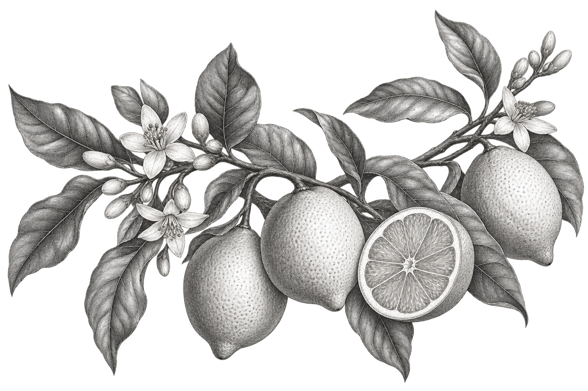
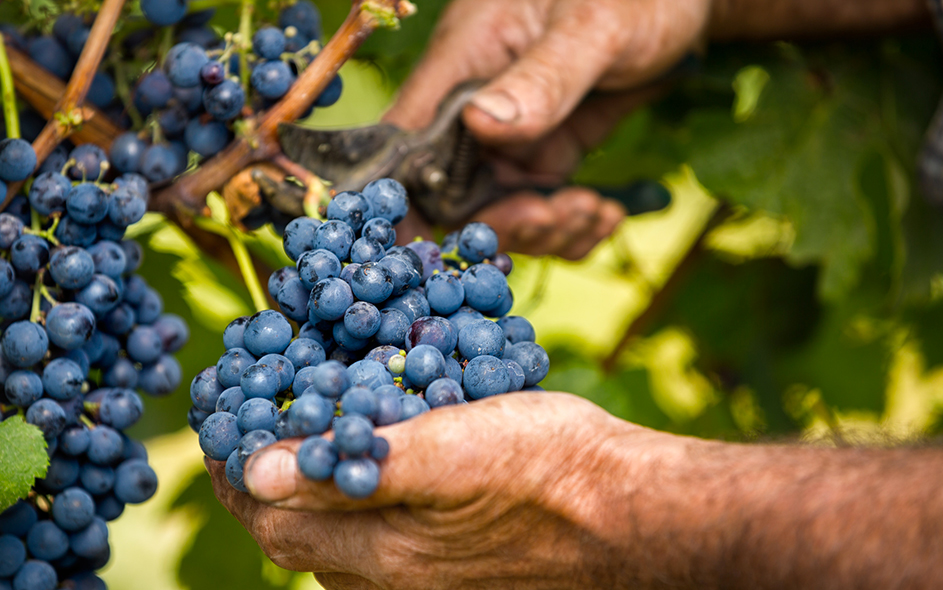
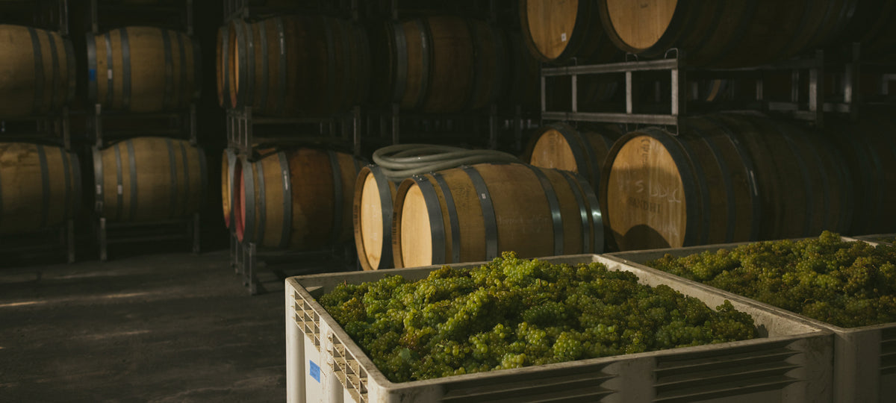
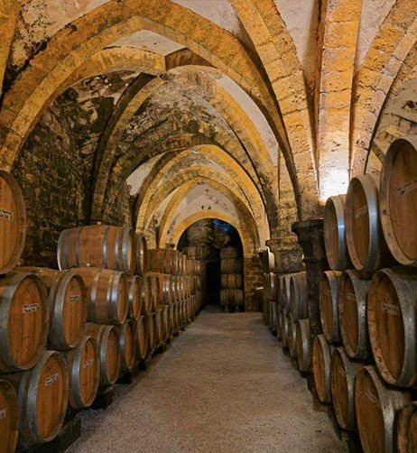

Cor
Dourado claro, com o suave toque verde de uma folha nova.
Nascido da terra.
Feito para o momento.
O frescor da primeira luz. A profundidade de uma estação bem vivida. Um espumante que se revela aos poucos, uma delicada borbulha de cada vez.
Frutas prensadas delicadamente, primeira fermentação em baixa temperatura e um repouso paciente sobre as borras. Cada etapa preserva a pureza natural do vinhedo.
Ostras frescas, peixes delicados e queijos jovens. Ou simplesmente uma conversa que merece durar um pouco mais.
Dourado claro, com o suave toque verde de uma folha nova.
Borbulhas finas e persistentes. Leves, vivas e naturais.

Flores cítricas e pera fresca, seguidas por um delicado toque de brioche tostado.
Vibrante no início, generoso na essência. Um final mineral que permanece na memória.
Quatro capítulos. Uma filosofia paciente.
Deixar a natureza conduzir e escutar com atenção.

Colhidas no equilíbrio entre maturação e frescor. O começo de tudo.

O mosto repousa no seu próprio ritmo, preservando a expressão mais pura da fruta.

No silêncio da adega, a textura se desenvolve e as nuances mais sutis ganham voz.

A final pause. O vinho comes together, ready to become part of your story.
Além da taça, existe um lugar. Caminhe entre as videiras, entre no silêncio fresco da adega e conheça as pessoas e a dedicação por trás de cada garrafa.
Alguns momentos
merecem um pouco mais.